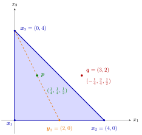

Convex Combination¶
Definition¶
Let with . A linear combination
is called a convex combination of if for and .
With two points this gives a second form of the definition of a convex set: a set is convex if and only if for all and all with . The empty set is convex by definition.
Interpretation¶
A convex combination is a weighted average of points. Put a mass at the point , with total mass ; the convex combination is the centre of mass. It therefore always lies "between" the points and never outside the region they span.

The figure draws Example 2. The point has weights on , all nonnegative, so it lies in the filled triangle. It sits halfway along the dashed segment from to : peeling off with weight leaves the point , a two-point combination of and . The weights of also sum to , but the weight on is negative, and lies outside the triangle, beyond the edge opposite .
For two points, traces the segment from () to (); this is the parametric form of a line with the parameter restricted to . A larger weight on pulls the point towards : with the point lies of the way from to . For three points not on one line the convex combinations fill the triangle with these corners. The key trick is to peel off one point: if , the combination is a two-point combination of and a point on the opposite side. The induction proof that a convex set contains every convex combination of its points (see Key Results) repeats this step.
Both conditions on the weights matter. Without one gets affine combinations, which fill the whole line or plane through the points (compare affine subspaces); without the points may be stretched, so is a nonnegative combination but not a convex one.
The same weighted averages appear in OR Modelling, where every convex combination of optimal solutions of a linear program is optimal, and in Jensen's inequality, where the weights are probabilities. A common misconception is that it suffices to check combinations with one fixed point of ; Example 4 below shows that this does not give convexity.
Key Results¶
- The convex combinations of two points form the line segment joining them. The convex combinations of three points form the filled triangle with corners if the points do not lie on one line, and otherwise a line segment or a single point.
- If is a convex combination with , then with , a uniquely defined convex combination of and .
- The two forms of the definition of a convex set, with for and with for , , are equivalent, and the empty set is convex by definition.
- A nonempty set is convex if and only if, for every , every convex combination of points of lies in (proved by induction on ).
- A convex combination of convex combinations of points of is again a convex combination of points of ; this is the key step in showing that the convex hull of consists of all convex combinations of points of .
Examples¶
1. A point on a segment. Let , and . Then . Its distance to is , which is times : the weight on places the point of the way from to .
2. Inside or outside a triangle. Let , , . Solving with gives , and ; these weights are unique because and are linearly independent. For the weights are nonnegative, so lies in the filled triangle. Peeling off as in the second Key Result gives and indeed . For the weights are : is an affine combination but not a convex combination of the corners, and it lies outside the triangle.
3. Three points on one line. For , , the convex combinations form the segment from to , not a triangle. The weights are no longer unique: .
4. Combinations with one point are not enough. Let , the union of the two axes, and . For every and the point lies on the same axis as , so every convex combination of and is in . Yet while , so is not convex. So checking combinations with a single fixed point of does not prove convexity.
Prerequisites¶
Related Concepts¶
- Convex Hull
- Intersection and Sum of Convex Sets
- Convex Combination of Optimal Solutions
- Jensen Inequality
- Affine Subspace
- Convex Cone
- Epigraph
Sources¶
- Math VI: Convexity and Optimization · Week 1
- H. E. Nusse and M. Dienstknecht, Math VI: Convexity and Optimization, lecture notes 2026–2027, Section 1.1
Aliases: convex combinations, weighted average of points Keywords: \sum_{k=1}^{m}\lambda_k\boldsymbol{x}k, \lambda_k\geq0, \sum, line segment, filled triangle, closed under convex combinations Symbols: element of, lambda, real numbers, square root, subset, sum, union }^{m}\lambda_k=1, \lambda\boldsymbol{x}+(1-\lambda)\boldsymbol{y
Last updated: 10 November 2026 16:43
Convex CombinationContinuity of Convex FunctionsConvex ConeConvex HullExtreme PointConvex Set in R^nLinear CombinationParametric Representations of Lines and PlanesIntersection and Sum of Convex SetsConvex Combination of Optimal SolutionsJensen InequalityAffine SubspaceEpigraph